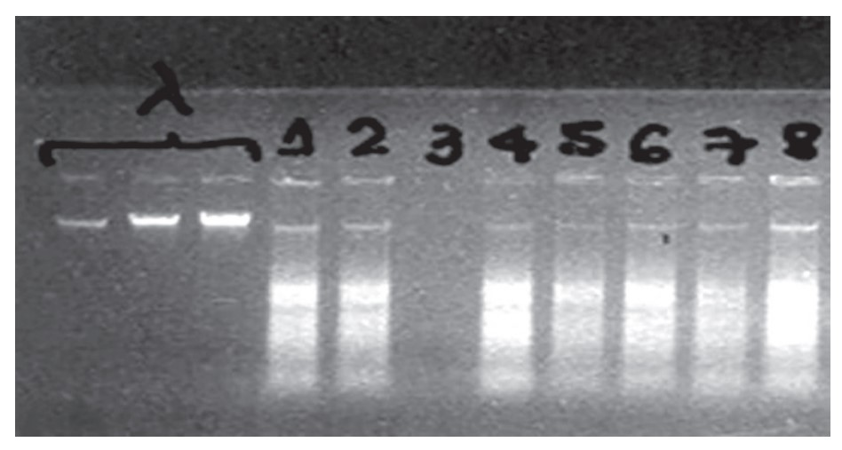

9 Quantificação
Após a etapa de extração, determinar a concentração de DNA, assim como a sua qualidade e pureza, são fatores importantes para o desenvolvimento de estudos em biologia molecular. Dessa maneira, as amostras obtidas podem ser avaliadas quanto à sua concentração e qualidade. Essa avaliação pode acontecer de algumas maneiras, como realizando uma eletroforese em gel de agarose, através da medição da absorbância com o uso de espectrofotômetros ou utilizando fluorímetro por meio das alterações nas características de fluorescência na presença de DNA.
A quantificação irá fornecer informações sobre a concentração de DNA extraído, assim como a integridade das amostras que serão trabalhadas. Na quantificação utilizando gel de agarose, um gel com concentração de 1% é preparado e as amostras de DNA são aplicadas juntamente com amostras de concentrações conhecidas. Para essa finalidade, o DNA do bacteriófago Lambda é comumente utilizado como padrão. O gel é normalmente submetido a eletroforese e é realizada uma estimativa visual através da comparação com o DNA padrão para determinar a concentração de DNA em cada amostra, analisando a fluorescência e espessura das bandas, obtendo valores aproximados. Além disso, as amostras consideradas de boa qualidade irão formar bandas íntegras, enquanto amostras degradadas ou com presença de moléculas de RNA apresentarão rastros ao longo do gel.

Por outro lado, a quantificação em espectrofotômetros, como por exemplo o NanoDrop, fornece dados um pouco mais exatos sobre a concentração de DNA presente nas amostras. Entretanto, ainda são valores baseados em um calibrante, tomado como padrão, além de ser necessário adquirir aparelhos específicos para realizar a quantificação do DNA, tendo um custo elevado quando comparado à quantificação em gel. Essa quantificação é baseada na medição da quantidade de luz absorvida pelo DNA em solução no comprimento de onda de 260 nm. Quanto maior for a absorção de luz nesse comprimento de onda, maior a concentração de DNA extraído na amostra.
Já o fluorímetro é um dos métodos mais sensíveis e geralmente utilizado para amostras com pouca concentração de DNA ou que tenham contaminantes que absorvem comprimentos de onda de 260 nm. Essa análise acontece pela luz emitida de moléculas fluorogênicas, sendo um método alternativo para avaliar a concentração de DNA e RNA marcando a amostra com um marcador fluorescente (corante fluorescente). Porém, também é um método com um custo elevado e demanda um tempo maior para preparação das amostras.
O método de quantificação geralmente utilizado pelos pesquisadores do Nupgen é a eletroforese em gel de agarose 1%, visto que tem dado certo para a maioria dos grupos trabalhados no laboratório, exceto parasitas que não passam por essa etapa, indo diretamente para a PCR devido a baixa concentração de DNA obtida nas amostras. Na quantificação são utilizadas três concentrações diferentes de DNA Lambda, sendo elas: 5, 10 e 20 ng/μL.
A quantificação irá mostrar se as amostras de DNA extraídas precisam ser diluídas para a realização da PCR, pois é preciso ter uma concentração ideal. Dessa forma, quando as amostras forem quantificadas com valores superiores a 5 ng/μL, elas precisam ser diluídas. A fórmula utilizada para isso é \(C1 * V1 = C2 * V2\), onde serão encontradas as quantidades de DNA e água Milli-Q necessárias para que o DNA fique na concentração final de 5 ng/μL.
9.1 Preparação por amostra
Gel agarose 1%.
Correr por aproximadamente 40 minutos, a 100 volts.
DNA lambda (pipetar 5 μL + 1 μL de GelRed em cada um):
5 ng/μL – 25 ng
10 ng/μL – 50 ng
20 ng/μL – 100 ng
GelRed
2 μL de DNA + 1 μL de loading + 1 μL de GelRed + 1 μL de água Milli-Q*
*água Milli-Q é opcional
Safer
3 μL de DNA + 1 μL de Safer + 2 μL de água Milli-Q
9.2 Diluição do DNA para 5ng/μL
\(C1 * V1 = C2 * V2\)
C1 – concentração da amostra (inicial)
V1 – quantidade de DNA necessária (descobrir)
C2 – concentração para diluir (vai diluir para 5 ng)
V2 – volume final total (50 μL)
OBS: Quantidade de água Milli-Q é: 50 μL - quantidade de DNA